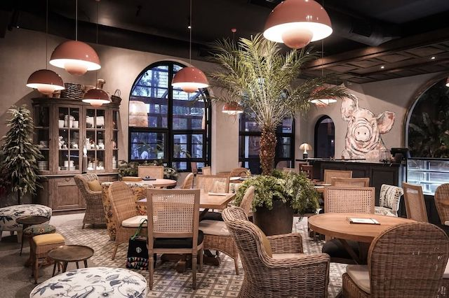

5 Great Restaurants of 2021

Baker J
Crimson Hotel, Entrata Urban Complex, Civic Drive, Filinvest City, Alabang, Muntinlupa City
Contact: 0998-595-3831
Facebook: www.facebook.com/bakerjmanila
Flaky, moist, and with a distinct signature smell—all terrible qualities in a person, but great in a croissant—Baker J’s delivery of traditional pastries and techniques can transport you to France for just a moment. In this sleek and shiny corner of the Crimson Hotel, gone are the rushed, barely enjoyed meals that rule our everyday lives. Instead, you’re compelled to slow your roll and pick one up—preferably a Pain au Chocolait—and savor your food. Leisurely breakfasts are easy with dishes like The Complet and the classic Eggs Benedict.
Bon Appetit @ 1120 House
The Metropolitan Compound, Estrella Street corner Amapola Street, Makati City,
Metro Manila
Instagram: www.instagram.com/bonappetit1120house
The worlds of food, lifestyle, and home come together at retail space 1120 House in Makati—and the food part of the equation is represented by their resident café, Bon Appetit. Expect classic bistro fare interpreted in fresh and novel ways, with dishes that bear a French-leaning backbone with the occasional hints of Filipino flair. Just some of their one-of-a-kind eats are the Filipine Crab Fat pasta with our own aligue; the Poulet Galantine which uses organic chicken, Spanish chorizo, homemade beef franks, organic eggs, and olives; and the Purple Yam French Toast that gets its nutty flavor from ube.

Fook Ya
Unit D 5666 Don Pedro Street, Poblacion, Makati City
Contact: 0927-045-8640, 7943-6685
Facebook: www.facebook.com/fookyahroasts
Travelling is still out of the question for many of us. If you’re craving for a taste of Hong Kong though, head on over to this cozy spot in Poblacion. Fook Ya cooks up Hong Kong-style roasts and noodles so good and so packed with flavor they’ll make you feel as if you’re right in the heart of Central. We suggest ordering their Roasted Duck Combination for the full experience; this platter has savory and tender Roast Duck, crisp and juicy Lechon Macau, sweet and savory Char Siu, chewy and nutty jellyfish, with all those flavors rounded out by ultra-rich century eggs. Pair it with any of their equally stellar noodle dishes. The Wanton Noodle, a soothing savory soup with freshly made noodles and bouncy shrimp dumplings, is a strong contender.

Gatong
42 Dalsol Road, Quezon City
Facebook: www.facebook.com/gatongqc
t’s all about meat at this backyard-BBQ shop in Quezon City. They make a standout Texas-style pulled pork by smoking pork that’s been flavored with their homemade dry rub, resulting in a deeply smoky, savory flavor and uber-juicy makeup. Though they began as an online-only shop with occasional pop-ups, they recently also opened a small dine-in area at their QC headquarters where you can hang out over their signature Pulled Pork Sliders, Carnitas de Sisig tacos, Pork Ribs, and more.

Kobe Jones
Le Grand Condominium, 130 Valero Street, Salcedo Village, Makati City
Contact: 0915-098-5735
Facebook: www.facebook.com/kobejonesph
Back in the early aughts, fusion food was still largely a novelty, in that you’d be willing to watch it on TV, but not so much to respect a restaurant that did it. Today, fusion is so prevalent that you’ll catch professional kitchens doing it badly and getting away with it; Kobe Jones is definitely not one of those places. Instead, this brooding, thoughtful Salcedo Village restaurant just decided not to limit itself to one genre. They’re helmed by Chef Tom Hines, formerly of establishments like Wasabi, Lulu + Hooch, Smith Butcher, and Grill Room—and he draws on his experiences cooking up Western and Asian to come up with a cohesive, East-meets-West menu using top-notch ingredients. From Russian blinis with caviar to Hokkaido scallops to great-quality sushi and sashimi and more, you’ll find and immediately satisfy new cravings here; opportunities to explore exactly how temperature and texture play into an incredible dining experience come aplenty. Whatever you do, don’t miss the Pan-Fried Miso Salmon, with Norwegian King salmon marinated with white miso and grilled until slightly charred outside but succulent as can be inside.